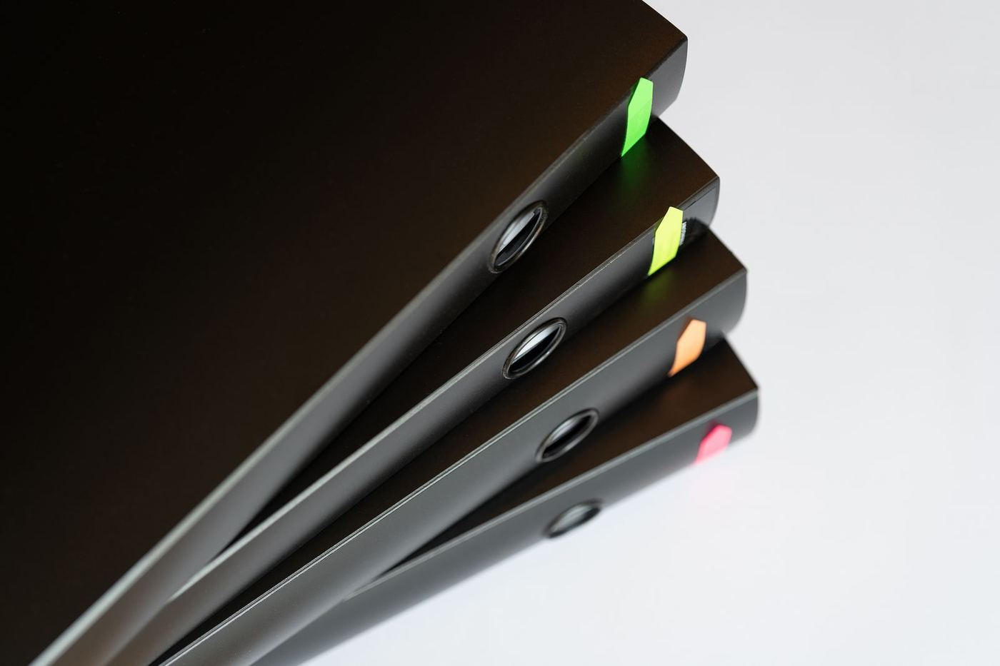

För dig som har pärmen i knät.
Välj SIE-filen från ditt bokföringsprogram. AI Auditor går igenom varje verifikation mot bokföringslagen, momslagen och skattereglerna, och jämför bolaget med andra i samma bransch.
Gratis. Filen lämnar aldrig din dator.
Få veta om något har blivit fel innan Skatteverket gör det.
Ett underlag att granska föreningens bokföring mot, med lagrum för varje punkt.
Se vad som faktiskt har gjorts, och vad som borde ha gjorts.
Kom väl förberedd. Ju färre frågor revisorn har, desto färre timmar.
Exportera en SIE-fil (typ 4) från Fortnox, Visma, Bokio, Spiris, Björn Lundén, Accounted eller ditt program. Granskningen tar några sekunder och körs i din webbläsare.
Filen läses bara av din webbläsare. Den laddas inte upp till någon server, sparas inte och används inte för att träna någon AI. Så fungerar det.
Har du ingen SIE-fil till hands? Testa med vår exempelfil.
Med bransch jämförs bolaget med SCB:s statistik för samma bransch och storlek. Skriv branschen i ord, eller SNI-koden om du vet den. Vet du inte hur du får fram filen? Så tar du ut en SIE-fil.
Fyll i det du har till hands. Uppgifterna jämförs med bokföringen här i webbläsaren och skickas ingenstans.
Alla svenska bokföringsprogram kan spara bokföringen som en SIE-fil. Det är samma fil som byrån och revisorn använder.
47 kontroller går igenom varje verifikation i din egen webbläsare. Ingen fil laddas upp, ingenting sparas.
Rätta själv med förslagen, skicka en färdig sammanfattning till byrån, eller låt din egen AI läsa vidare med ett färdigt underlag.
Varje kontroll bygger på en regel i lag eller god redovisningssed. Rapporten visar regeln, var i bokföringen avvikelsen finns och hur den rättas. Nyckeltalen jämförs med SCB:s branschstatistik för företag med samma bransch och storlek.
Varje natt kontrolleras om någon av lagarna, BFN:s regler eller Skatteverkets belopp och vägledning har ändrats. Ändras något går vi igenom kontrollerna innan granskningen uppdateras. Se alla källor.

Vi som har byggt AI Auditor har själva varit ekonomichefer och skött ekonomin i föreningar. Vi vet hur det är att sitta med en pärm kvitton kvällen före årsmötet, eller att få en faktura från byrån och undra vad som egentligen har gjorts.
AI Auditor är verktyget vi själva hade velat ha: snabbt, ärligt och med lagrummet utskrivet. Det ersätter ingen revisor, men det ger dig något att stå på.
Vi som byggt AI Auditor
Frågor eller synpunkter: kansliet@nordwikpartners.se
Rapporten innehåller ett färdigt underlag med instruktion och alla verifikationer. Kopiera det och klistra in i ChatGPT, Claude eller Gemini. AI:n letar efter det fasta regler missar, som fel konto, fel momssats eller kostnader som kan vara privata. Underlaget går bara till den tjänst du själv väljer.
Fyll i bankens saldo, skattekontots saldo, momsdeklarationernas ruta 49 och årets resultat enligt årsredovisningen, så jämförs de med bokföringen. Det görs också i din webbläsare, och inget skickas iväg.
Nej. Filen läses av din egen webbläsare och skickas inte till någon server. Du kan koppla från internet när sidan har laddat och ändå köra granskningen. Det enda som kan lämna datorn är AI-underlaget, och bara om du själv väljer att klistra in det i en AI-tjänst.
Nej. Det är en automatisk granskning som pekar ut fel och sådant som bör kontrolleras. Den ersätter inte revisor, och ansvaret för bokföringen ligger kvar hos dig eller styrelsen.
Granskningen av bokföringsfilen är gratis.
I de flesta bokföringsprogram finns den under Export eller Rapporter, ofta som "SIE typ 4". Välj det räkenskapsår du vill granska.
Ja. Välj "Sammanfattning till min byrå" i rapporten. Den är skriven som frågor, så att byrån kan förklara eller rätta.